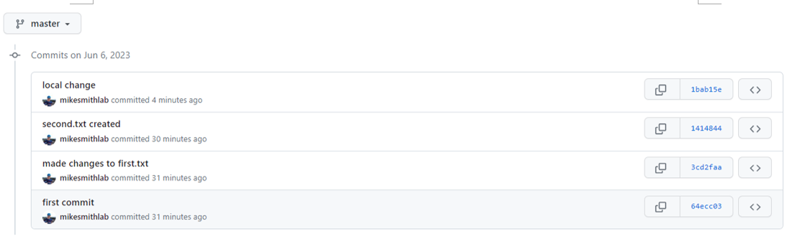
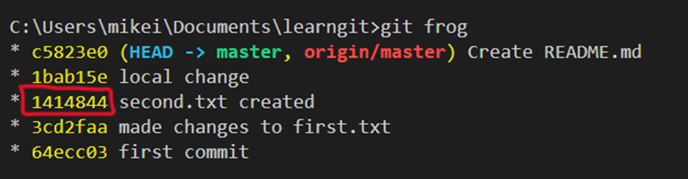
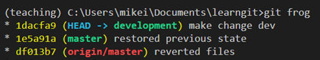
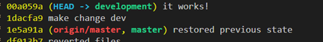
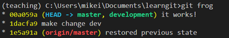
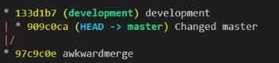
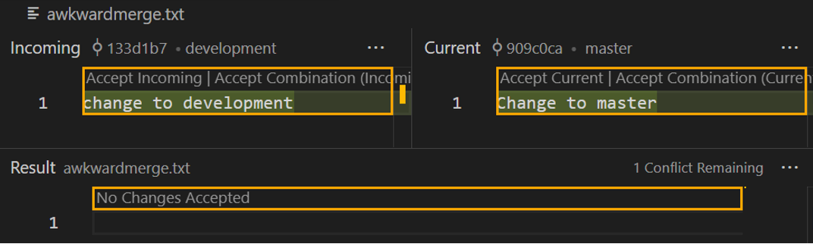
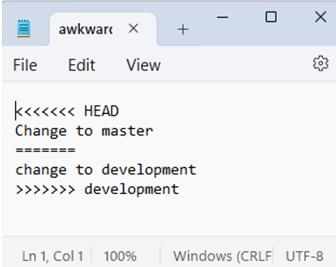

8 Git and Github#
In this course you’ve been synchronising your work with Github Classroom. This is a great way to get started with version control, but it’s not the only way to use git and github and requires someone else to set everything up for you. In this section we’ll learn how to use git and github from the command line. This is the way most professional developers use git and github. It’s also the way you’ll need to use git and github if you want to use it for your own projects.
8.1 Getting Started#
8.1.1 What are git, github?#
Git is a piece of software that runs on your computer that enables you to record the step-by-step development of / changes to any set of files in a designated folder (a repository). Every time you commit, git will take a snapshot of your filesystem and the contents of those files, and add it to a history of other snapshots taken at earlier times. Git also allows you to see or recover your files at any point in that history. Git enables you or others to develop the same project contributing to the same history on different computers and combine the results without losing anything, or inadvertently mucking up someone else’s contributions.
Github is a website / server that hosts git repositories. Local copies of your project can be synchronised with an equivalent repository on GitHub. The code can then be distributed to use on other computers owned by you, those of your collaborators or the wider public.
8.1.2 Why do I need to learn git?#
Software developers and datascientists use git as an essential part of their job, so you need to learn professional tools.
Backup your code
Experiment with code without risk of destroying your main code.
Recover old versions – before you introduced a massive bug!
Enables collaboration
Enables distribution of your code
Gives you access to software tools e.g automated documentation builders, AI assisted coding
8.1.3 Why are we doing this from the command line, when I can do this from a gui?#
I believe that if you learn it on the command line you’ll understand what you are doing far better. Gui are fine when everything is working, but they are often hard to unpick when you get yourself in a muddle and there are lots of different Gui that all look and behave differently. If you understand the command line you’ll be able to figure out any Gui regardless of what IDE you are using.
On a practical level it is also worth realising that if you get stuck and need to google help, you’ll find lots of help for the command line. Seldom do you find a load of screenshots for your particular gui.
8.2 Setup#
8.2.1 Check installation#
Before starting, open vscode. Select File > Open Folder and navigate to your project folder.
Check that you installed everything correctly in the installation guide. Open a terminal (Ctrl + Alt + T or alternatively Terminal > New Terminal). This should be a command prompt terminal. Type git --version followed by gh --version you should see the following, although the version numbers could be different. If you get nothing or an error revisit the installation instructions and troubleshoot.
8.2.2 Add git and github info#
You need to setup some settings in git:
git config --global user.name "YOURGITUSERNAME"
git config --global user.email YOUR@email.com
git config --global core.editor "code --wait"
If you type for example git config --global user.name it should then return the username you just entered. Do this with username and email and double-check you’ve got this setup right.
You should already have setup a github account but if not, create an account on github and make a note of the username and password.
Once setup, on the command line type gh auth login. You will get a series of prompts. Follow the prompts and answer the same as below if unsure. You will be given a code. Copy and paste this into the browser as indicated:
This authenticates you as a user to github, enabling you to interact with the remote server.
Make sure everything is working. If all these things are setup right then you can carry on. Don’t go any further unless you’re getting the right responses!!
8.3 A very quick guide to some basics of the command line:#
It’s useful to have some general familiarity with how to use the command line to move around your computer. You don’t need to know a huge amount, just a few simple things. You can type these commands into a Windows command prompt.
Command |
Meaning |
|---|---|
|
This changes the directory |
|
Move up to parent folder |
|
Prints out the contents of the current folder |
|
Prints out contents of folder including hidden files |
|
Creates a new folder in the current location |
|
Clears the screen |
If you use Mac or Linux the command dir or dir /a becomes ls or ls -a and cls becomes ctrl + L (Linux) or cmd + K (Mac)
8.4 Getting started with git#
Our aim in this tutorial is to introduce 3 workflows for different scenarios:
You are working on a simple project, where you want to be able to backup your work and “undo” any disastrous changes (Sections 1.2-1.4).
A more sophisticated project, where you want to be able to try an idea out or develop a project without affecting the main code. If it works you want to then incorporate this new development into your main code (Sections 1.5-1.6)
Contributing or receiving contributions to a really large opensource project.
To understand everything in this session is a tough ask. Git can feel confusing when you first start using it. There are lots of new concepts so if this is your first time using git you should expect that this will take practise beyond this session to get used to using it. Keep going it is an important skill. If this is the first time you’ve used it, your main aim in this session should be to master workflow 1. It would be better to get really comfortable with that than try to complete everything and only half understand what you are doing. We will cover workflow 2 extensively in the notes so you can look at this later on. Workflow 3 will be described very briefly, so that you can understand what you would need to learn in the future.
8.4.1 Making a git repository#
In order for the git software to track changes you need to create a git “repository”. A git repository is a regular folder of files but it also contains a hidden folder called “.git”. This folder is where the software, git, keeps a record of all the snapshots of changes made to your files. There are 2 ways to create a git repository on your computer:
Cloning someone elses folder from a remote (we’ll cover this later on)
Turn a regular folder on your computer into a git repository.
8.4.2 Turning a folder into a git repository#
To setup a git repository you can create or use a regular folder and then turn it into a git repository
(Check the address in your terminal prompt shows that you are in your projects folder)
mkdir learngit
cd learngit
git init
dir /a
You can use this strategy even if the folder already exists and contains files. Just don’t make the directory (mkdir).
8.4.3 Recording changes to files#
As you create files or change the contents of existing ones within your repository, you are going to repeat 3 steps:
Make changes (ie write code etc).
Add the changes (deciding what will go into your next snapshot)
Commit the changes to the project history (take a snapshot)
git statustells you where different changes you’ve made are in the cycle. Changes are only safe once you commit.git add <filename>will add a particular file to the next snapshot, orgit add *will add everything that has been changed to a list of things you want saved in your next commit snapshot.git commit -m “A commit message”will commit those things you prepared, saving a snapshot of your filesystem.
Commit messages are usually short but try and make them descriptive. This is the log you will use to work out what got changed when, so “Changed some stuff” isn’t particularly useful!
Here’s an example of that cycle. Write these commands into the terminal after making the changes indicated in vscode. Pay attention to the output of git status between each command.
Make a change by creating a file first.txt
git status
git add first.txt
git status
git commit -m “first commit”
git status
Notice how after each command git tells you the status of the changes: untracked, added, committed
Continue using the command git status in between each command to get a feel for the loop above.
Add some text to first.txt
git add *
git commit-m “made changes to first.txt”
Create second.txt
git add *
git commit-m “second.txt created”
These are obviously silly changes. In reality, you would write some code and then commit every time you felt you’d made enough progress. How often should you commit? Commit small and often. Due to the way git works a snapshot takes up very little space. Try to make the changes small enough that the commit message describes the changes you’ve made.
Over time we therefore build up a history of changes / commits. To view this history of commits I like to use the following command with a few options:
git log --oneline --graph --all
Since that’s quite long I create an alias (a shorthand). You can do this for any command like this:
git config --global alias.frog "log --oneline --graph --all"
Now typing git frog produces the same effect. Why frog? Rhymes with log and it sticks in my mind, but you could use any other alias.
8.4.4 Understanding commit history:#
Type git frog (or whatever alias you gave above)
There is a lot of info, so let’s analyse what we are being told. Each line represents a different commit that we have made in the history of developing this project.
Each commit is given a unique identifier known as a hash e.g 443dc57. You can use these hash numbers to refer to particular points in the project history.
We are shown the message stored at each commit so we can understand what changed
master is a marker that always points to the last commit in the history.
HEAD is a marker that points to the current “state” of the files in the repository. Currently it is shown pointing to the master or most recent commit. However, it is possible to move this pointer to a different commit, enabling us to view the files as they were at that earlier moment. (We’ll show examples of this later)
N.B it is possible that on some setups you will see main rather than master. It is just a name, and acts exactly the same.
8.5 Communicating with github#
8.5.1 Setting up a remote repository#
Currently our repository just exists on our computer. Creating a copy on github.com enables us to:
Backup changes securely
Pickup and work on our project on a different computer
Distribute our code to others
Allows others to work on the same project
To setup a copy of our repository on github
Make sure the address shown on your command prompt is inside your git repository “learngit”.
Use the github command line tool by typing
gh repo create.Then follow the prompts choosing the answers in blue below for each decision.
Replace “mikesmithlab” with your github account username.
When asked if you want to push commits answer Yes. When the question has an answer in brackets this is the default and can be selected by just pressing Enter.
Once finished go to https://github.com/<YourGithubUserName>/learngit
Sign into your account if not currently logged in. You should see an online version of your local repository containing the same files.
Not only are the files there in their current form, but the project history has also been uploaded. If you click on the “commits“ it will show the same commits and messages as you see when you type git --oneline --graph --all (or my alias git frog).
On the command line on your computer type git frog. Notice that in addition to the markers HEAD and master we also have a new one called origin/master
origin is the default shorthand for the URL to the repository on github. This marker is a reference to the commit history that is stored remotely on github’s server.
8.5.2 Pushing and Pulling#
If we make changes on our computer, add and commit to our local files, the remote copy on github is not automatically updated. We have to Push changes from our computer to github to bring the two copies back in sync.
Make an additional change to the file first.txt and then add and commit with a helpful message
git add *
git commit -m “change to local copy”
git frog
Notice git is telling us that our master has moved forward with the new commit. However, the remote copy known as origin/master is still at the previous commit. If you refresh your github commit page you can confirm this. This means the github remote doesn’t yet know that a change has been made on your computer.
How do we update the remote copy (origin/master) so that it is up to date with our local copy (master)?
git push origin master
Then type :
git frog
The pointer to origin/master has now moved forwards to the same commit as master to indicate that both local and global copies are the same. Now if you refresh the github page you should see the remote copy of the commit history has been updated.
In normal development, you don’t always need to push every time you commit. Work on a feature locally, and then push the changes at less frequent intervals, or when you finish a session. However, whilst learning it’s not a bad idea to do this often.
If someone (perhaps you) were to push changes from a different computer to the remote github repository, it is possible that the copy of the files on our computer would be behind the github copy. In this case we would need to “Pull” the changes from github to our computer. It is not generally a good idea to directly alter files on github. But to illustrate this process we are going to create a readme file for our project on github.
Go back to your repo homepage https://github.com/<GithubUsername>/learngit and click Add a README. In the main panel write a description of your project. Click Commit Changes twice.
Go back to your repo homepage https://github.com/<GithubUsername>/learngit and click commits. Now we have a change that exists on our remote repository, but does not exist on our local computer. Use git frog at the command line to confirm your local copy has no knowledge of the changes that have happened on the github server. To update our computer with the changes on github we need to Pull those changes.
git pull origin master
Look at your files in vscode. You should now see a README.md file
As an exercise make a change to this readme and save it
git add *
git commit -m “changed readme”
git push origin master
Check your changes have appeared in github. You might then like to open the Readme on github and edit it before pulling the changes back to the local repo.
git pull origin master
This is a very common workflow. If you are the only person working on your repository and you are only working from a single computer you won’t need to pull. However, it is a good practise to pull changes (that could have been made by others or on a different computer) before then pushing your changes back to github.
8.5.3 Cloning Github Repositories - ie make a copy of a git repository that is hosted somewhere else (e.g github) on your computer#
At the beginning of section 1.2 we described how to take a local folder and turn it into a local git repository. Later we then showed you how to take this local repository and setup a copy on Github. Sometimes you might want to do the opposite process. That is take a repository that exists on Github and make a local copy that you can work on. This process is called cloning.
To do this, change (cd) to the directory on your computer where you’d like the new repository to be put. Then type git clone followed by the URL of the repository:
git clone https://github.com/<UserOrOrganisationName>/<RepositoryName>
Once the process has finished you’ll end up with a local copy of the repository which you can use. When changes occur on the Github repository you can now git pull origin master to update your local copy.
Note Whether you can push your local changes back to github depends on the access permissions you have to the remote repository. If it is your own Github page or one of an “organisation” that you are a member of, you can update the remote copy with the git push origin master command.
Here is a great place to stop and consolidate what you’ve learnt. If you can get comfortable with what we’ve covered so far that’s an important step in mastering git and github. With these concepts you can now backup your work securely.
8.6 Moving through your commit history#
8.6.1 Viewing old versions of files#
Type git frog to view your commit history. There are a series of commits in which each time we have changed the current state of the files. Let’s suppose you are working on your code and you have introduced a serious bug somewhere but you can’t figure out exactly when it was introduced or what it was. Wouldn’t it be great if you could go back in time, run the code at various points and figure out when the bug was introduced and therefore what the cause was. Or perhaps you accidentally deleted some important bit of code and now wished you could get it back. To illustrate let’s try and go back to when we created second.txt. The commit hash in my case is highlighted. Yours will be different so look up the equivalent hash and substitute.
 git checkout 1414844
git frog
Notice that the HEAD marker which tells us where in the history we are currently, has moved to the commit we asked for. This commit was before we created the README file and pulled from the remote. If you now look in your list of files this README has disappeared.
git checkout 64ecc03
Now we are back at our first commit. The second.txt file has disappeared and the contents of the first.txt are missing! Not to worry, this is not permanent. To return to the initial position we can “checkout” the marker master.
git checkout master
(N.B git checkout master does not produce the same result as git checkout c5823e0)
Our files and their contents are the same as they were originally.
8.6.2 Detached Heads!#
If you look at the output when you typed git checkout “You are in 'detached HEAD' state.” This sounds a bit concerning!!
What this means is that the HEAD marker (the one that points to the current state of the files) is no longer pointing to the master marker (the one that points to the latest commit in the history). This isn’t really an issue, but it means you are in a kind of temporary mode. You can run the code, make changes even commit things but the moment you switch back by typing git checkout master those changes will be lost.
8.6.3 What changed?#
Sometimes, especially in a mass of code it can be hard to track down what you changed between two particular commits. There are two ways I use to do this. The first is to go to the github repository page online. As we did above click on the “commits” link in the upper right to see the repository history:
Clicking on one of the hashes we can see what changed between this commit and the previous one. Things that were removed are highlighted in red and things added are highlighted in green.
The other option is to use the git diff command. This requires you to know the hashes of the two commits you want to compare. For example:
git diff 64ecc03 1414844
Exercise:#
Create a python file called example.py in vscode then
add,commit,pushchangesModify the python file to say print(‘Hello World’),
add,commit,pushchangesCheck repository on github and verify changes are appearing (sometimes you need to refresh your browser).
Now deliberately introduce a bug. Type oops_print(‘Hello World’).
add,commit,pushchangesUse
git checkoutto go back to the previous commit and then run the python code it will now print out “Hello World”.
8.6.4 How to get changes back permanently#
If you search the internet you’ll find all kinds of commands and options being suggested and arguments about whether it is the correct approach:
git rebase
git reset
git revert
git restore
The most important difference is what they do to the commit history. git rebase and git reset when used with certain options get you back to the state of a particular commit. However, they do so by effectively rewinding: removing or detaching the subsequent commits. In otherwords they change the recorded history irreversibly. This can get you in a mess. If someone else is working on the same project a huge mess! You may have just erased a commit that someone else needed or had developed code from.
In contrast git revert adds a new commit to the end of the history that undoes the previous change. You can work your way back further by reverting multiple commits. This is better because your mistakes stay in the history and you get back the files the way you want them. There are issues however with branching (see below) and you have to list all the commits to revert.
My preferred solution is to use git restore. This adds a commit to the end of the commit history which looks identical to a previous commit but doesn’t remove anything from history.
If you have used git checkout to identify the state you want your repository to return to, make a note of the hash. Then move HEAD to point to master. This is really important and is the one thing that can go wrong!
git checkout master
Next restore the files. N.B there are two - a space after the hash number, and a dot. The dot indicates the current position which should be the master marker.
git restore –-source <hash> .
Finally, add, commit and push the changes
git add *
git commit -m “restored to hash 1234”
git push origin master
You will now have a final commit that looks exactly the same as the location you checked out earlier. This new commit is appended to the end with the history of the project remaining intact.
Workflow 1 Exercise:#
In windows file explorer create a new folder called “gitexercise”.
Open this folder in vscode
Turn it into a local git repository
Create a new file and make 3 sets of changes: ie change,
add,commitSetup a remote repository using
ghRestore the files to the state specified by the second commit
If you understand this and can do it relatively easily you have grasped workflow 1. It still wouldn’t hurt to test yourself a little. Try making some other changes, e.g. a new repository. When happy move onto the next section where we’ll start exploring the background for workflow 2
8.7 Creating other markers#
At this point we have 3 markers:
master which on our local repository points to the end of the commit history
origin/master which tells us where the end of the commit history is on the remote repository on github. (Actually it tells us where it was last time we connected)
We also have a marker called HEAD which is a bit different because it always points to the current position in the commit history of the files. Usually this points to master but as we’ve seen it can be moved around changing what we see when we open the files.
The code you are developing may get used for a project that you submitted or perhaps was used in the analysis for a research paper. It is possible that after submission you carry on developing the code. However, you may want to be able to rerun the code as it was when you submitted the paper. For example, perhaps the reviewers want you to run another simulation. Alternatively, perhaps the code has reached a particular level of maturity and you want to mark this as a stable version that you distributed to other researchers.
8.7.2 Branches#
Just as master and origin/master point to the end of a commit history on the local and github versions of our project, it is also possible to set up other markers that can sit at the end of a related but different version of our project. What does this look like? Here are two scenarios:
You want to do an experimental change to your code. The change is going to need a few commits but you don’t know if it will work or not and therefore if you’ll keep it.
You have a big project which is used by lots of people. You want people to have access to a stable functioning version of the project at all times, but in parallel you want to develop the code.
In both cases the code you are working on is related to the main commit history of the project. In fact it shares at least some of the history prior to the changes / developments you are making. However, after a certain point the commit history will be different. This is known as a branch. Every branch has a new marker associated with the end of the branch that like master moves forward whenever a new commit is made and always points to the final commit in the history of that development.
We can create one of these branches from any point in our existing commit history.
Example 1: a quick experiment by creating a branch called “development”:
git branch <branchname>
Here I created a branch called development but notice HEAD is still pointing at master. If we were to commit changes now, master and HEAD would move forward together adding to the same commit history as usual. To start adding to an alternative development history we need to move HEAD to point at development instead. To do that we use:
git checkout development
Now if we make a few changes, add and commit them it will be development history that changes.
Add another commit to development and update the position of origin/master so that it is up to date with master. You should get something that looks like this.
If the experiment appears to work we want to take those changes and add them to our main branch. This is called a merge. Merges become more difficult if independent changes are made on both the master and development branch since this creates conflicts that need resolving. We’ll look at an example later. In this case only development has changed so it should be possible for git to merge the changes automatically.
We want the changes made to development to be merged into the master. To do this we must first move to the master branch and then merge the changes from development:
git checkout master
git merge development
Since there are no conflicts, the changes made to development are automatically incorporated into master’s history:
Note 1dacfa9 is now in master whereas above it was only part of development. If development is to be short lived we could now delete it.
Before you do take a breath! There are very few ways to lose your work on git but deleting a branch is one of them!. There is actually no big need to delete a branch. If in doubt leave it.
You should already be on the master branch since we typed git checkout master above. We then delete the development branch by typing
git branch -D <branchname>
When you have 2 branches this is pretty simple but you could have lots of branches so its worth just double checking.
Exercise:#
Create a new file called awkwardmerge.txt
add,commitCreate a branch called development but don’t check out to it (ie stay on master)
write “Changing the master” in the file
addandcommitwith a message containing masternow checkout to development – Why does the file awkwardmerge.txt not contain anything?
Write “Changing development” in the file
addandcommitwith a message containing development.
Trying checkout master and development a few times but finish on master.
Example 2: In the second example, we are going to see what happens when changes are made to both branches independently prior to a merge.
Lets view the commit history for the exercise above:
git frog now shows that the commit history diverges with the creation of two branches each of which has a commit. We decide we want to merge the development branch changes back into the master. Check your HEAD is pointing to master.
git merge development
Git detects a conflict which we must resolve manually. vscode provides a nice way to look at these conflicts if we click on merge editor where we can choose which bits to accept from each branch. This could be both, one or other or none. The bottom panel shows us the version that would be outputted. Accept the incoming change from development and click complete merge.
However, we could also just open the file in an editor make changes deleting what we don’t want:
Once you have merged, you should commit the changes
This is a fairly simple merge conflict. Sometimes, there may be multiple conflicts throughout the files in a project. These problems can be reduced by not working on too many branches or not going too long between merges. Headaches arise for even very experienced git users. The only solution is to take your time and work through the conflicts methodically.
8.8 Long lived branches and remotes#
If your branch is long lived, you may also want to have a remote copy of this branch. We can setup a parallel branch on the github remote. Start by viewing the current remotes you have configured
git remote -v
Since this is our own repository, we have permission to both read (fetch) and write (push). It is possible to have read only permission to someone else’s repository.
origin is a default nickname given to our repository. It is a quick alternative to the URL to the repository. We could setup something else like this:
git remote add <NickName> <WebUrlRepo>
To setup a remote version of the local branch “development”, also called development:
git checkout development
git push -u origin development
To view all branches local and remote:
git branch -a
From then on we can push and pull changes from local development to this remote development branch:
git push origin development
git pull origin development
Workflow 2 Exercise:#
In windows file explorer create a new folder called “gitbranch”.
Open this folder in vscode
Turn it into a local git repository
Create a new file and make 3 sets of changes: ie change, add, commit
Setup a remote repository using gh
Now go back to a previous commit
Create a branch called development
Checkout this branch
Make some changes to this branch, add and commit
Setup a remote branch on origin to track this branch
Make some changes and check you can push to the branch
Switch to the local master branch, make another change and check you can push it to the remote master
If you want to merge the changes from development into master which branch should you checkout to?
Perform a merge and resolve the conflicts
Push the new changes to origin/master
Delete the local branch development
*If you understand this and can do it relatively easily you have grasped workflow 2.
8.9 .gitignore#
There may be some files which you don’t want git to track. This could be because they are:
datafiles
configuration files
temporary files
A .gitignore file should be placed in the top-level of your git repository and should be committed like any other file. A git ignore can ignore a specific file or more commonly patterns of files. For example you might want to exclude all png images. As a result you would write *.png in the file, where * is a character that means any group of letters / numbers. To find out more about how to exclude files, look at this really extensive .gitignore template .
8.10 Workflow 3, contributing to a big open source project.#
If you want to contribute to a big project, for example numpy it probably isn’t a surprise that the owners of this project are not going to let you make changes to their project directly. The worldwide user base for this library is enormous and you could inadvertantly stop the code working for all of them! However, the power of open source code is that everyone can contribute to it. How does this work?
Using git fork you can create a copy of any repository found on github in your github account. This is an independent copy. ie if you make a change it will not affect the repository you forked. You can then make a change and test it. How do you then allow the wider community to benefit from your changes? The answer is that you go to the original repository and submit a pull request. This lets the owners know that you have a suggested change to their repository. They can then check the change and if they want to incorporate it into their version of the project for all the users to benefit from.
8.11 Where to go from here#
Learning git and github is a skill that will take practise. But as outlined in section 1 it has a lot of benefits.
When trying more complicated things, try to draw pictures of what is happening and use git status, git frog, git remote -v, git branch -a to check that what you think should happen when you type a command, is indeed what is happening. Typing the commands will gradually help you learn them and what they do. However, section 12 has a quick guide which you may like to use as a reference.
7.12 Git Quick Reference#
Definitions |
Explanation |
|---|---|
HEAD |
Marker pointing to the current state of the files in the commit history |
master |
Marker pointing to the end of main commit history. Moves with commits |
origin |
Default name given to represent your remote repository |
Setting up |
Explanation |
|---|---|
|
Register your git username |
|
Register your git email |
|
Simple way to authorise your account from command line |
|
Turn a local folder into a git repository |
|
Copy a remote repository to your computer |
|
Take existing local repository and setup a copy on github |
Working with git |
Explanation |
|---|---|
|
Shows status of files / changes; untracked, staged |
|
Add file or changes in file to next commit |
|
Add all files or changes to next commit |
|
Commit taking a snapshot of filesystem as specified by add |
|
View the commit history |
|
Move HEAD to new commit, switch branches etc |
|
Create new commit identical to commit with |
|
Create a static marker to mark a particular point |
|
View all branches local and remote |
|
Create branch with |
|
Delete branch |
|
View remotes |
|
Add a new remote |
|
Write changes from local repository to remote repository |
|
Read changes from remote repository to local repository |